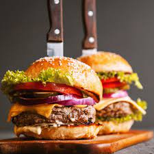

Hamburger Recipe

Description
Homemade American Burger in less than 10 minutes. want to do it yourself? countinue on reading!
Ingredients
- 1kg of meat
- 3 tomatos
- 1 onion
- 2 spoons olive oil
- 3 spoons of sea salt
Steps
- Cut the half of the onions to cubes and put in on a hot frying pan after putting one spoon of olive
- Wait for the onion to golden, then add the meat for 3 minutes on a hot frying pan
- Cut the onions and the tomato while waiting for the meat to burn
- Add 2 spoons of sea salt
- Mix it all and wait 2 minutes
- viola! you got yourself an old fasion american burger. bon apetit!